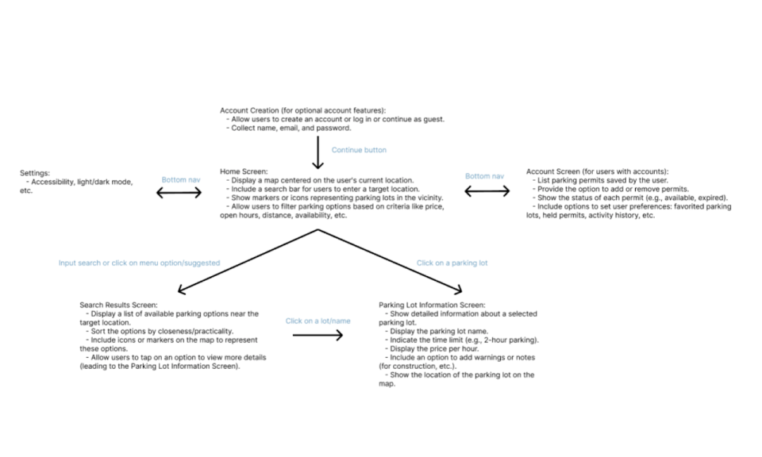

Phase 01: Concept Statement & Rapid Spin
In this first phase of our project, we selected the topic, problem, and client to work with for the rest of the semester, and spent a week rapidly running through the phases of UX design to create a baseline prototype off which to measure the evolution of our solution and our growth as designers, as well as to confirm that we had chosen a sufficiently engaging problem.
01 Research
While ParkMobile stands out as the predominant parking app at UVA, it primarily focuses on facilitating payment for parking spots, effectively eliminating the need for traditional meters. Despite our distinct goal of addressing parking-related challenges beyond payment, we found value in exploring ParkMobile due to its prevalence at UVA and shared features, notably its map interface for displaying available lots.
01 Design
In this phase, we produced a list of what we assumed to be key requirements for the app, which I then translated into features and organized into screens. Below is a diagram of the app’s information hierarchy detailing what features to include on each screen.

The next step was to draw a rough sketch of each screen, including all of their main features.
Next, I moved my design to Figma in order to work collaboratively with group mates. Within our group, we conducted additional ideation and critique, and I created more iterations of the screens for consideration based on their feedback.
01 Prototype
This led to the following final design for this phase.
Rapid spin final design_
The home screen features a dynamic map centered on the user's current location, including a tab for recommended parking at the bottom of the page.

The home screen displays a filter button and a report button, which will pop out into a menu of report options on tap.
Parking spots and reports will be visible as interactive pins on the map. Tapping these will show more detailed information.
This information screen will include the lot’s address, pricing, open hours, and capacity levels.
01 Evaluation
We conducted an evaluation of this initial prototype with a handful of potential users.
Tasks assigned for feedback:
log in/register
navigate for parking
report issues
Feedback received:
Users found the map intuitive to use but expressed confusion when given account management tasks.
One user mentioned a lack of app branding and personality.
Parking space availability and duration were crucial for users to know upfront.
All users expressed strong interest in the reporting feature, as it could keep them informed about potential parking issues.
Most users trusted crowd-sourced information and were willing to contribute by alerting their peers.
01 Key Takeaways
The updated concept statement now explicitly acknowledges the primary stakeholders: UVA students. These students, often residing far from grounds, form the core user group as they frequently need short-term parking solutions for classes.
The target users likely commute using personal vehicles, given that those relying solely on alternative transportation might be less inclined to use a parking-specific app.
Notably, available parking spots are identified using satellite technology.
12%
Metric description
87%
Metric description
$5000
Metric description
87%
Metric description